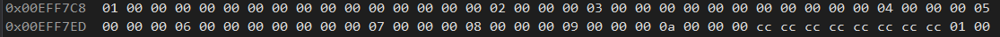

The elements of an array can be of any data type, including arrays.
An array of arrays is called a multidimensional array
int arr[2][3]; // A 2x3 2D array
In 2D arrays, it is convenient to think of the left index as being the row and the right as being the column
Multidimensional arrays can be initialized with an initializer list. If done so, the first dimension can be omitted
int arr[2][3] = { {1,2,3}, {4,5,6} };
int anotherArr[][3] = { {1,2,3}, {4,5,6}, {7,8,9} };
int yetAnotherArr[][4] = { {1}, {2,3}, {4,5,6}, {7,8,9,10} };
We can access elements of multi-dimensional arrays the same way we did with 1D arrays
int yetAnotherArr[][4] = { {1}, {2,3}, {4,5,6}, {7,8,9,10} };
cout << yetAnotherArr[2][2] << endl; // Prints 6
cout << yetAnotherArr[2][3] << endl; // Prints 0
cout << yetAnotherArr[2][4] << endl; // Prints 7 :)
cout << yetAnotherArr[3][0] << endl; // Also prints 7
The reason why we got a 7 can be found in the memory representation of a 2D array
The [2] operation returns the third "row"
The [4] operation overflows the row and returns the first element of the next row
Do not write code like this :)
That was it :)